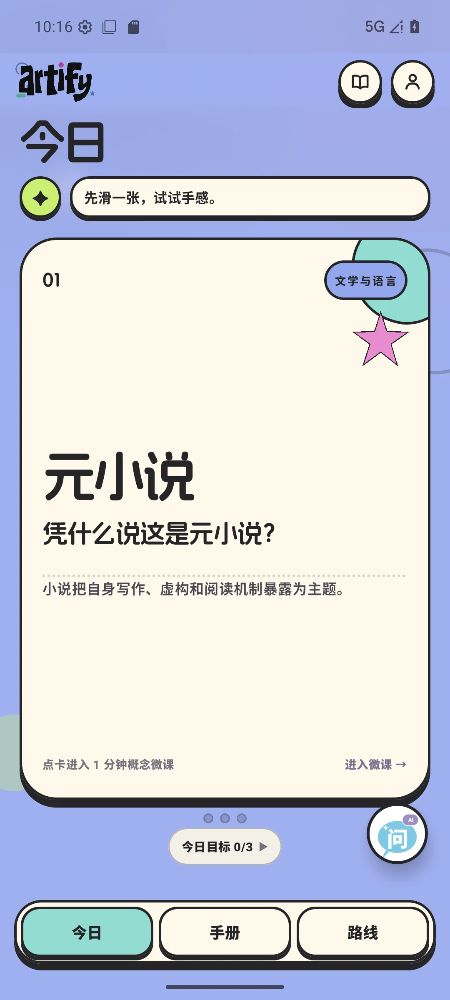
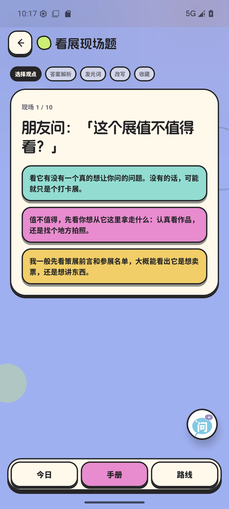
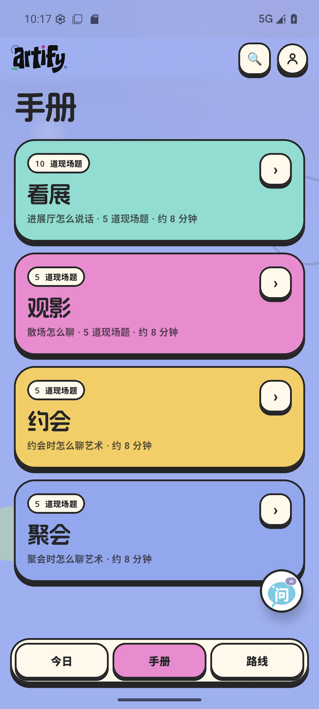
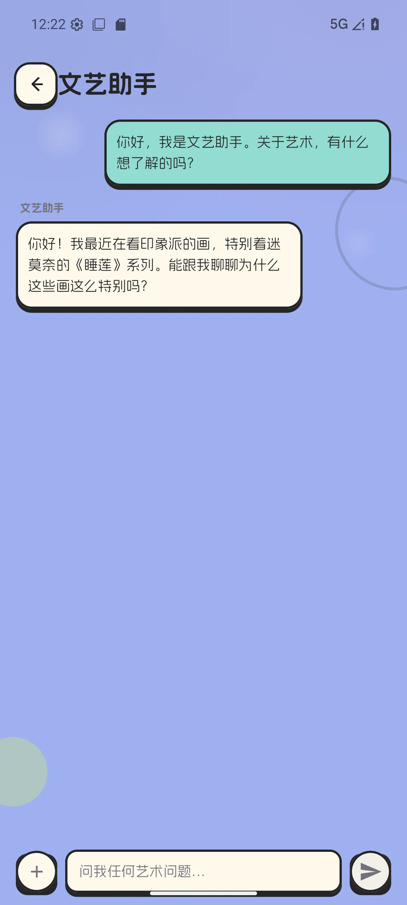
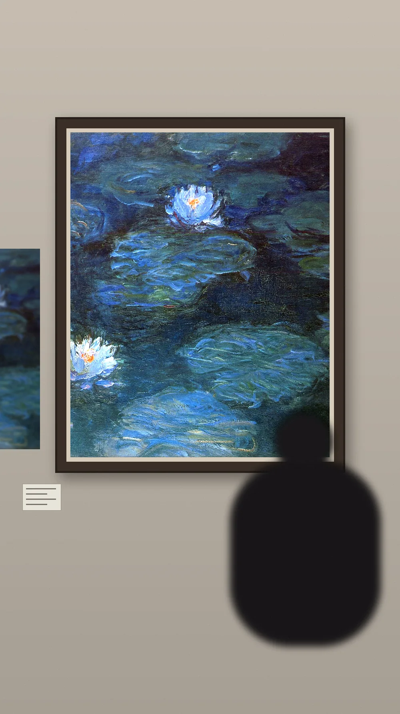
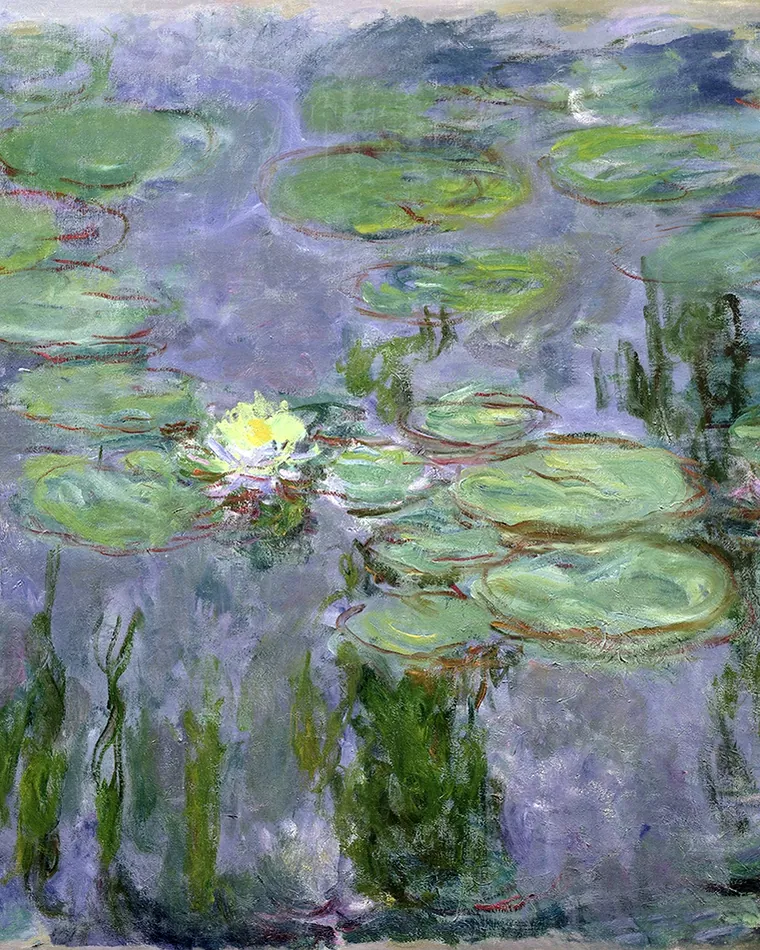
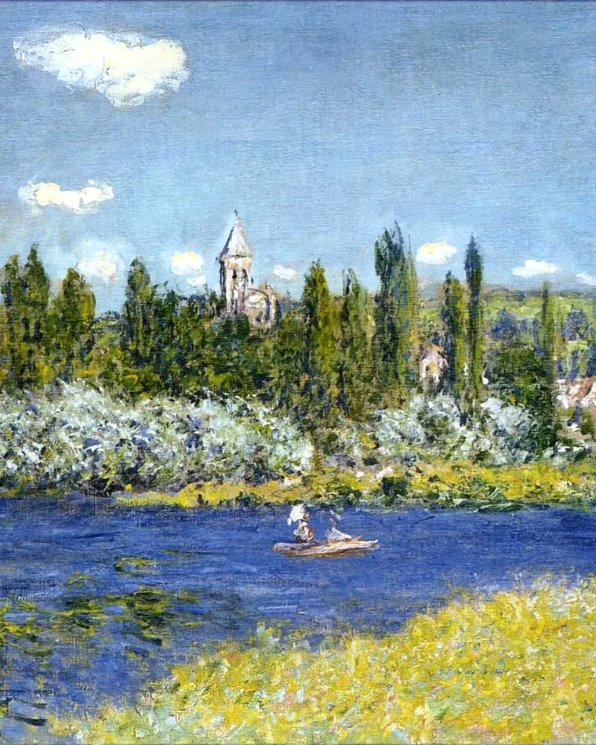

现场题
别人抛出一个话题，你知道怎么接
- 不判对错的三种装法
- 回答层给你核心句和出处
- 翻车了还有补救话术
ARTIFY · 文艺指南
文艺指南把每个文艺概念拆成一分钟的微课。一屏只放一个概念，右滑进微课，左滑略过——没有信息流，也没有排名压力。
支持 Android 与 iOS




右滑 / 左滑
和刷短视频不一样——这里一屏只放一个概念，你看得见它的难度、常见度，也看得见自己学到哪了。
现场题
概念长廊
往下滚，穿过它们。每一块牌子上，是你想弄懂的一个词。
你的浏览器不支持 3D 展示。
现场题
识宝



架子还没满。去展馆拍一件，识宝会把它放上来。
看过的，都摆在自己的书架上。识宝抠下来的作品会自动收进这里，慢慢攒成一间小书房。
手册 · 台词本
文艺助手

扫码在手机上打开官网
下载 APK
允许「安装未知应用」
打开就能用
常见问题
安装、隐私、更新这些疑问，先在这里找答案。
目前免费。
点「下载安卓版」，下载完成后按提示允许「安装未知应用」，即可安装。安卓 7.0 及以上。
学习进度、台词本和偏好都保存在你手机本地；只有评论、内容更新这类功能需要联网。
App 里可以检查更新，也可以回这个页面重新下载。
安装包由我们的官网直接提供。如果对来源有疑虑，可以先在备用机上试装。
有。iOS 版已经完成，正在上架 App Store。开放下载后会在本页公布。